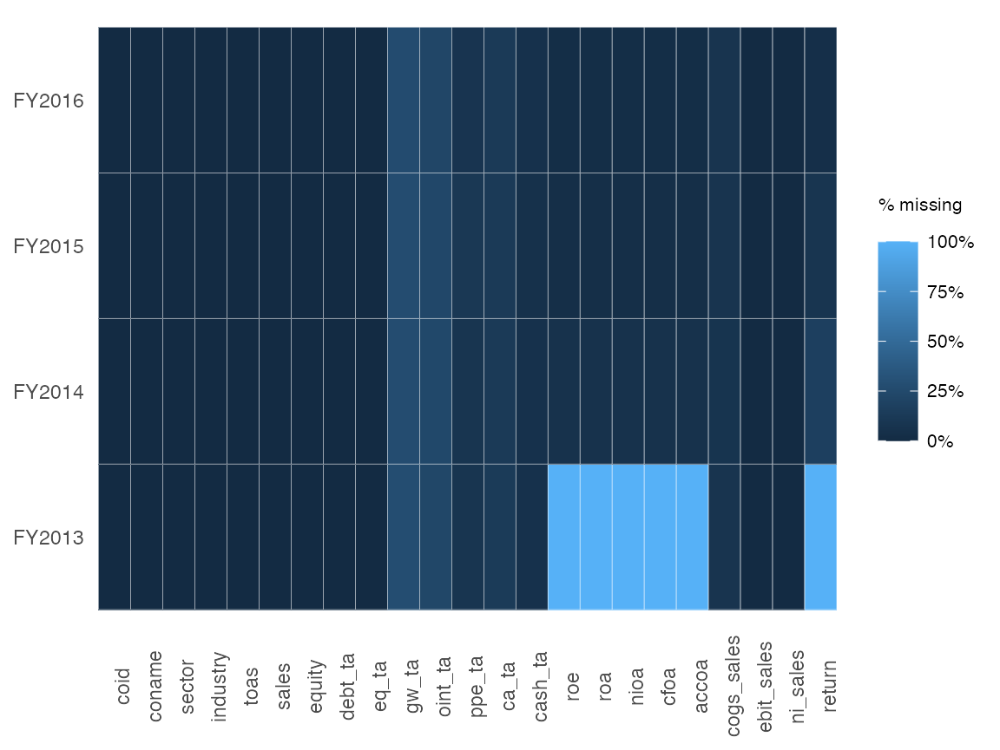
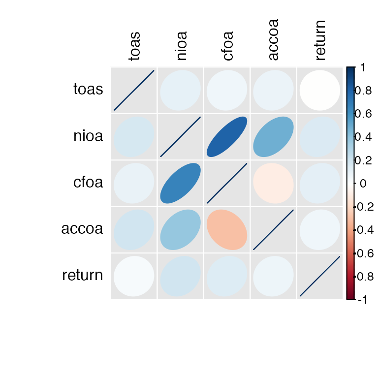
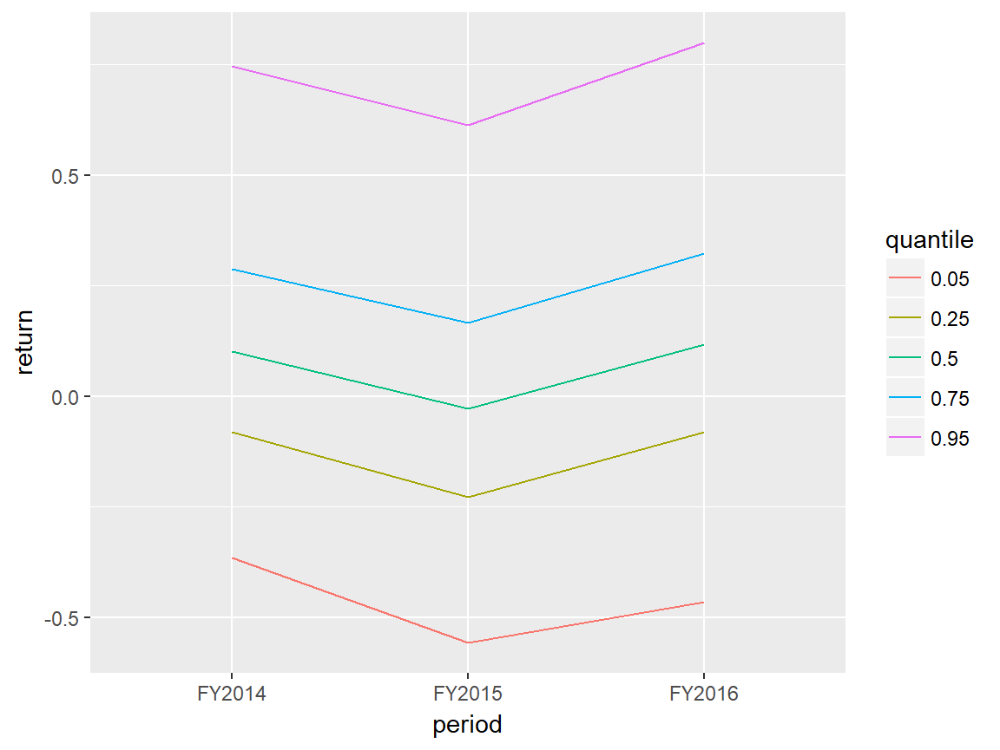
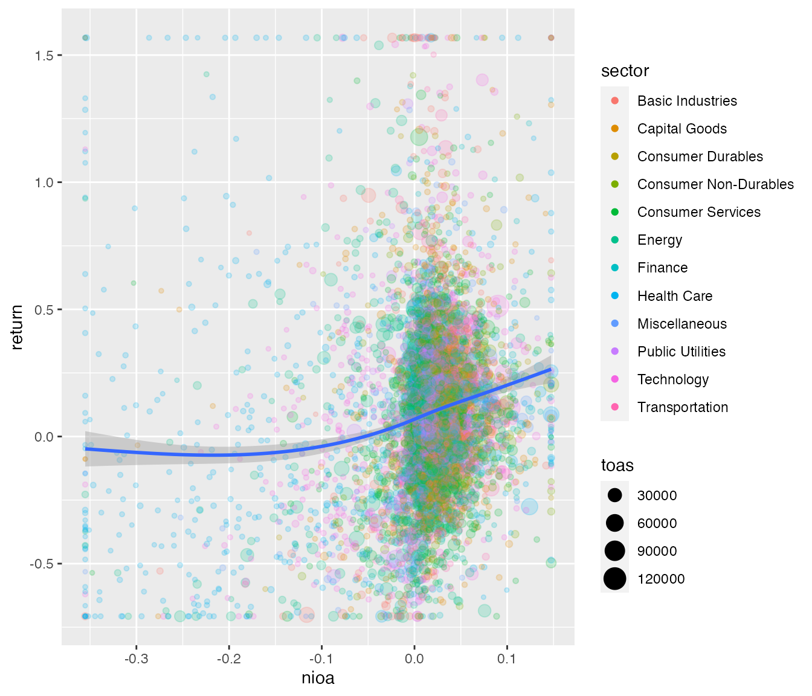

Using the functions of the ExPanDaR package
Joachim Gassen
2019-04-06
ExPanDaR-functions.RmdWhile the main purpose of the ExPanDaR package is to provide the infrastructure for the ExPanD app, the auxiliary functions of the package can also be used to support your exploratory data analysis workflow in your own code. All functions are relatively thin wrappers around established R packages for graphics and HTML table presentation (ggplot2, kableExtra, stargazer). While I developed them to support analysis steps that are common with empirical archival research projects in the area of accounting and finance (which happens to be my field), I hope that they are generally useful for exploratory data analysis.
To see what ExPanDaR has to offer, let’s take a quick tour. For more detailed guidance on how to use a specific function presented below, take a look at the respective function’s help page.
Data Preparation
ExPanDaR is designed for exploratory panel data analysis (hence the name). Thus, while you can also use some functions on cross-sectional data, for most functions you will need a data frame containing your panel data. ExPanDaR expects the data to be organized in long format. This implies that each observation (a row) is identified by cross-sectional and time series identifiers and that variables are organized by columns. While you can have a vector of variables jointly determining the cross-section, the time-series needs to be identified by a unique variable. The ExPanDaR functions treat cross-sectional identifiers as factors and expect the time-series identifier to be coercible into an ordered factor.
For this walk-through I will use the data set russell_3000, which comes with the package. It contains some financial reporting and stock return data of Russell 3000 firms from Google Finance and Yahoo Finance and has been collected using the tidyquant package in the summer of 2017. A word of caution: While the data appears to be relatively decent quality I would advise against using this data for scientific work without verifying its integrity first. These are the variables included in the data.
kable(data.frame(Variable=russell_3000_data_def$var_name,
Definition=russell_3000_data_def$var_def),
row.names = FALSE)| Variable | Definition |
|---|---|
| coid | Company identifier |
| period | Fiscal year |
| coname | Company name |
| sector | Sector |
| industry | Industry |
| toas | Total assets at period end (M US-\() </td> </tr> <tr> <td style="text-align:left;"> sales </td> <td style="text-align:left;"> Sales of the period (M US-\)) |
| equity | Total equity at period end (M US-$) |
| debt_ta | Total debt (% total assets) |
| eq_ta | Total equity (% total assets) |
| gw_ta | Goodwill (% total assets) |
| oint_ta | Other intangible assets (% total assets) |
| ppe_ta | Property, plant and equipment (% total assets) |
| ca_ta | Current assets (% total assets) |
| cash_ta | Cash (% total assets) |
| roe | Return on equity (net income divided by average equity) |
| roa | Return on assets (earnings before interest and taxes divided by average equity) |
| nioa | Net income divided by average assets |
| cfoa | Cash flow from operations divided by average assets |
| accoa | Total accruals divided by average assets |
| cogs_sales | Cost of goods sold divided by sales |
| ebit_sales | Earnings before interest and taxes divided by sales |
| ni_sales | Net income divided by sales |
| return | Stock return of the period (%) |
You can infer from the variable definition that coid seems to identify the cross-section (a Russell 3000 firm) while period identifies the time-series (a fiscal year). In addition, coname also sounds like it mighty identify a firm but we cannot be sure whether there are duplicate company names. In addition, we want to verify that there are no duplicate coid/period pairs. Let’s check.
cs_ids <- unique(russell_3000[,c("coid", "coname")])
identical(cs_ids$coid, unique(russell_3000$coid))## [1] TRUE## [1] TRUEThe first test verifies that there are no two observations that share the same coid but a different coname. The second makes sure that there are firms with the same coname but a different coid. Thus, we can use both, coname and coid, or either as cross-sectional identifier.
The following test establishes whether in combination coid and period identify a panel observation.
any(duplicated(russell_3000[,c("coid", "period")]))## [1] FALSEThis seems to be the case.
As a next step, let’s use ExPanDaR’s function prepare_missing_values_graph() to eyeball how frequently observations are missing in the data set.
prepare_missing_values_graph(russell_3000, ts_id = "period")
OK. This does not look too bad. Only FY2013 seems odd, as some variables are completely missing. Guess why? They are calculated using lagged values of total assets. So, in the following, let’s focus on the variables that we care about and on the fiscal years 2014 to 2016 (a short panel, I know). Time to check the descriptive statistics using the prepare_descriptive_table() function.
r3 <- droplevels(russell_3000[russell_3000$period > "FY2013",
c("coid", "coname", "period", "sector", "toas",
"nioa", "cfoa", "accoa", "return")])
t <- prepare_descriptive_table(r3)
t$kable_ret %>%
kable_styling("condensed", full_width = F, position = "center")| N | Mean | Std. dev. | Min. | 25 % | Median | 75 % | Max. | |
|---|---|---|---|---|---|---|---|---|
| toas | 6,643 | 8,722.510 | 35,846.713 | 0.800 | 463.225 | 1,600.050 | 5,100.500 | 861,395.000 |
| nioa | 6,399 | 0.001 | 0.096 | -2.692 | -0.002 | 0.017 | 0.037 | 0.463 |
| cfoa | 6,399 | 0.033 | 0.084 | -2.121 | 0.021 | 0.041 | 0.065 | 0.460 |
| accoa | 6,399 | -0.032 | 0.052 | -0.712 | -0.046 | -0.026 | -0.012 | 0.621 |
| return | 6,009 | 0.097 | 0.433 | -0.938 | -0.136 | 0.065 | 0.269 | 6.346 |
Take a look at the minima and the maxima of some of the variables (e.g., net income over assets (nioa)). Normally, it should be around -50 % to + 50%. Our measure has a minimum way below -50 %. One thing that comes very handy when dealing with outliers is a quick way to observe extreme values. prepare_ext_obs_table() might be helpful here.
t <- prepare_ext_obs_table(na.omit(r3[c("coname", "period", "nioa")]))
t$kable_ret %>%
kable_styling("condensed", full_width = F, position = "center")| coname | period | nioa |
|---|---|---|
| Gamco Investors, Inc. | FY2016 | 0.463 |
| Gaia, Inc. | FY2016 | 0.369 |
| Five Prime Therapeutics, Inc. | FY2015 | 0.355 |
| NewLink Genetics Corporation | FY2014 | 0.318 |
| Ligand Pharmaceuticals Incorporated | FY2015 | 0.302 |
| … | … | … |
| Proteostasis Therapeutics, Inc. | FY2015 | -0.822 |
| Proteostasis Therapeutics, Inc. | FY2014 | -0.830 |
| Omeros Corporation | FY2015 | -1.255 |
| vTv Therapeutics Inc. | FY2014 | -1.269 |
| Omeros Corporation | FY2014 | -2.692 |
In a real life research situation, you might want to take a break and check your data as well as the actual financial statements to see what is going on. In most cases, you will see that the outliers are caused by very small denominators (average total assets in this case). To reduce the effect of these outliers on your analysis, you can winsorize (or truncate) them by using the treat_outliers() function.
r3win <- treat_outliers(r3, percentile = 0.01)
t <- prepare_ext_obs_table(na.omit(r3win[c("coname", "period", "nioa")]))
t$kable_ret %>%
kable_styling("condensed", full_width = F, position = "center")| coname | period | nioa |
|---|---|---|
| ABIOMED, Inc. | FY2015 | 0.147 |
| Acacia Communications, Inc. | FY2015 | 0.147 |
| Acacia Communications, Inc. | FY2016 | 0.147 |
| Aspen Technology, Inc. | FY2015 | 0.147 |
| Aspen Technology, Inc. | FY2016 | 0.147 |
| … | … | … |
| Workhorse Group, Inc. | FY2015 | -0.355 |
| Workhorse Group, Inc. | FY2016 | -0.355 |
| EXCO Resources NL | FY2015 | -0.355 |
| ZIOPHARM Oncology Inc | FY2015 | -0.355 |
| ZIOPHARM Oncology Inc | FY2016 | -0.355 |
Descriptive Statistics
This looks better. Let’s look at the winsorized descriptive statistics.
t <- prepare_descriptive_table(r3win)
t$kable_ret %>%
kable_styling("condensed", full_width = F, position = "center")| N | Mean | Std. dev. | Min. | 25 % | Median | 75 % | Max. | |
|---|---|---|---|---|---|---|---|---|
| toas | 6,643 | 7,198.735 | 17,632.076 | 45.400 | 463.225 | 1,600.050 | 5,100.500 | 122,418.180 |
| nioa | 6,399 | 0.002 | 0.077 | -0.355 | -0.002 | 0.017 | 0.037 | 0.147 |
| cfoa | 6,399 | 0.034 | 0.068 | -0.280 | 0.021 | 0.041 | 0.065 | 0.178 |
| accoa | 6,399 | -0.032 | 0.043 | -0.209 | -0.046 | -0.026 | -0.012 | 0.092 |
| return | 6,009 | 0.088 | 0.375 | -0.707 | -0.136 | 0.065 | 0.269 | 1.568 |
I am sure that you won’t care but I am a big fan of correlation tables. prepare_correlation_table() prepares a table reporting Pearson correlations above and Spearman correlations below the diagonal.
t<- prepare_correlation_table(r3win, bold = 0.01, format="html")
t$kable_ret %>%
kable_styling("condensed", full_width = F, position = "center")| A | B | C | D | E | |
|---|---|---|---|---|---|
| A: toas | 0.10 | 0.07 | 0.08 | -0.00 | |
| B: nioa | 0.17 | 0.80 | 0.49 | 0.15 | |
| C: cfoa | 0.10 | 0.66 | -0.09 | 0.12 | |
| D: accoa | 0.20 | 0.38 | -0.30 | 0.07 | |
| E: return | 0.04 | 0.20 | 0.14 | 0.08 | |
| This table reports Pearson correlations above and Spearman correlations below the diagonal. The number of observations ranges from 6002 to 6643. Correlations with significance levels below 1% appear in bold print. |
In fact, I like correlations so much that especially for samples containing many variables I use prepare_correlation_graph() to display a graphic variant based on the corrplot package. See for yourself.
ret <- prepare_correlation_graph(r3win)
Visuals
Additional visuals are available for exploring time trends. prepare_trend_graph() can be used for comparing variables…
graph <- prepare_trend_graph(r3win[c("period", "nioa", "cfoa", "accoa")], "period")
graph$plot
… and for eyeballing the distributional properties of a single variable over time you have prepare_quantile_trend_graph().
graph <- prepare_quantile_trend_graph(r3win[c("period", "return")], "period", c(0.05, 0.25, 0.5, 0.75, 0.95))
graph$plot
Nothing special going on here (not really surprising, given the short time span that the sample covers).
Finally, prepare_scatter_plot() produces the mother of all plots, the scatter plot.
prepare_scatter_plot(r3win, x="nioa", y="return", color="sector", size="toas", loess = 1)
Do you see the structural break around nioa == 0? Researchers in the area of accounting tend to like that kind of stuff.
Regression Tables
Finally, if you happen to be a fan of starred numbers, you can also quickly produce regression tables by using the function prepare_regression_table() that calls lfe::felm() for OLS and glm() for binary logit models. The tables are then constructed by calling stargazer::stargazer(), allowing for plain text, html and latex output.
You can construct tables by mixing different models…
dvs <- c("return", "return", "return", "return", "return", "return")
idvs <- list(c("nioa"),
c("cfoa"),
c("accoa"),
c("cfoa", "accoa"),
c("nioa", "accoa"),
c("nioa", "accoa"))
feffects <- list("period", "period", "period",
c("period", "coid"), c("period", "coid"), c("period", "coid"))
clusters <- list("", "", "", c("coid"), c("coid"), c("period", "coid"))
t <- prepare_regression_table(r3win, dvs, idvs, feffects, clusters)
htmltools::HTML(t$table)| Dependent variable: | ||||||
| return | return | return | return | return | return | |
| (1) | (2) | (3) | (4) | (5) | (6) | |
| nioa | 0.772*** | 1.794*** | 1.794*** | |||
| (0.064) | (0.384) | (0.511) | ||||
| cfoa | 0.705*** | 1.582*** | ||||
| (0.073) | (0.410) | |||||
| accoa | 0.534*** | 0.876** | -0.890** | -0.890 | ||
| (0.116) | (0.381) | (0.395) | (0.553) | |||
| Estimator | ols | ols | ols | ols | ols | ols |
| Fixed effects | period | period | period | period, coid | period, coid | period, coid |
| Std. errors clustered | No | No | No | coid | coid | period, coid |
| Observations | 6,002 | 6,002 | 6,002 | 6,002 | 6,002 | 6,002 |
| R2 | 0.054 | 0.047 | 0.035 | 0.341 | 0.344 | 0.344 |
| Adjusted R2 | 0.054 | 0.046 | 0.035 | -0.044 | -0.039 | -0.039 |
| Note: | *p<0.1; **p<0.05; ***p<0.01 | |||||
… or by applying one model on different sub-samples.
t <- prepare_regression_table(r3win, "return", c("nioa", "accoa"), byvar="period")
htmltools::HTML(t$table)| Dependent variable: | ||||
| return | ||||
| Full Sample | FY2014 | FY2015 | FY2016 | |
| (1) | (2) | (3) | (4) | |
| nioa | 0.801*** | 0.234* | 0.607*** | 1.375*** |
| (0.074) | (0.139) | (0.123) | (0.119) | |
| accoa | -0.067 | 0.014 | 0.638*** | -1.224*** |
| (0.132) | (0.240) | (0.205) | (0.233) | |
| Constant | 0.082*** | 0.130*** | 0.014 | 0.096*** |
| (0.006) | (0.011) | (0.011) | (0.011) | |
| Estimator | ols | ols | ols | ols |
| Fixed effects | None | None | None | None |
| Std. errors clustered | No | No | No | No |
| Observations | 6,002 | 1,817 | 2,033 | 2,152 |
| R2 | 0.023 | 0.002 | 0.033 | 0.058 |
| Adjusted R2 | 0.023 | 0.001 | 0.032 | 0.057 |
| Note: | *p<0.1; **p<0.05; ***p<0.01 | |||
Conclusion
This is all there is (currently). All these functions are rather simple wrappers around established R functions. They can easily be modified to fit your needs and taste. Take look at the github repository of the ExPanDaR package for the code. Have fun!